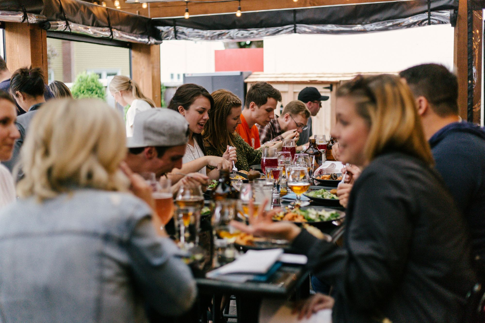

Manchester · Quarterly · Twelve to fourteen people
A private room, a long table, and nobody selling anything.
Dinner for agency founders and senior decision-makers, four times a year. Everyone at the table runs an agency. That's the whole idea.
01 — The short version
Most agency dinners are organised by someone who wants to sell to the room.
This one isn't. Four agency owners set it up because we wanted the version of this that nobody was running.
What it is
- Agency founders and senior decision-makers, four times a year
- A private dining room, booked just for us
- Honest conversation with people running the same kind of business
- Collaboration and referrals, if they happen on their own
- A small group that stays small
What it isn't
- A supplier event dressed up as a dinner
- A pitch, a panel or a deck
- Salespeople and business development teams
- An open community you can simply join
- Someone else picking up the bill
02 — Next dinner
The first one
Everything you need to know before you say yes.
- When
- Tuesday 22 September 2026, 10am
- Where
- Manchester city centre. Private dining room, shared with the group once you're in.
- Cost
- Nothing to attend. Everyone covers their own food and drinks on the night.
- Table
- Twelve to fourteen people. We'd rather turn someone away than make it a function room.
- After
- A WhatsApp group. Quiet between dinners, useful when it isn't.
03 — Who's at the table
Founders, MDs and partners. Nobody's deputy.
Creative, marketing, digital, brand and PR agencies — independents rather than network offices. Mostly Manchester and the North West, occasionally further if the fit is right. We watch the mix so the room doesn't end up as twelve people who all do the same thing and can't say anything in front of each other.

04 — Who set it up
Four agency owners, one shared complaint
We each got tired of the same evening: a room full of people being sold to, badged as networking. So we booked a table instead.
05 — How a seat happens
Three steps, in order
You're in the group
We add you to the WhatsApp group, share the venue, and you turn up. Recommendations for other agency owners are always welcome.
We look at the mix
Not a test. We're only checking the room stays balanced and there's no awkward overlap with someone already at the table.
Someone puts your name forward
Every seat starts with an introduction. If you're reading this, that part has probably already happened.
06 — Request
Ask for a seat
Tell us who you are. If it's a yes, you'll be in the WhatsApp group the same week.